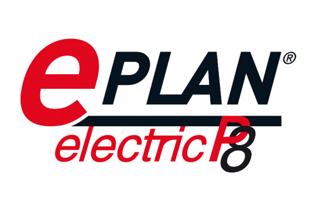
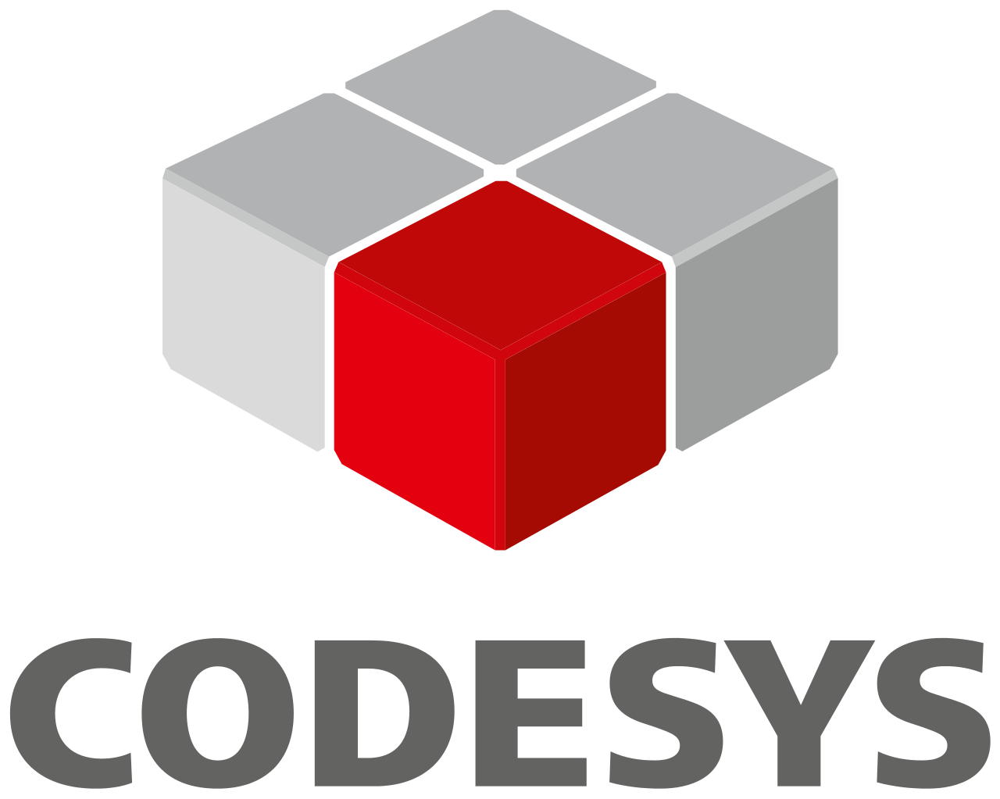
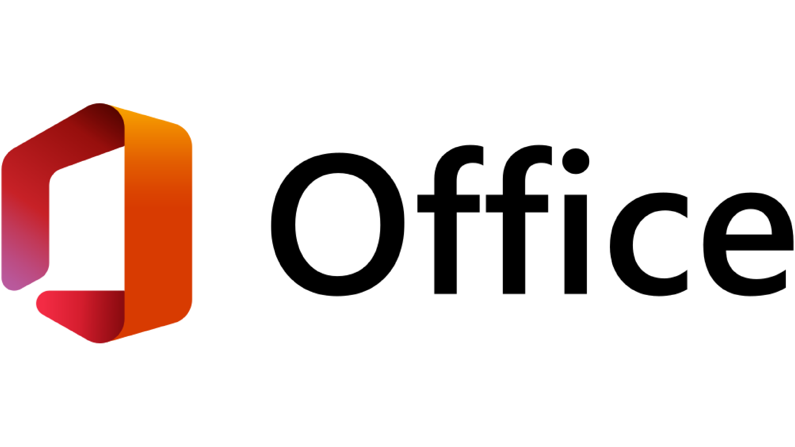
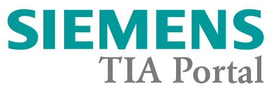
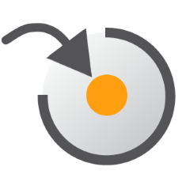
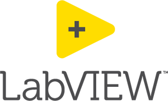

Over Mij
Welkom op mijn portfoliowebsite! Mijn naam is Gijs Arkink (1999), een enthousiaste en gedreven engineer woonachtig in Enschede. Mijn passie ligt bij het ontwerpen en realiseren van complexe mechatronische systemen en de bijbehorende industriële automatisering. Ik streef er voortdurend naar om technische grenzen te verleggen en mijn expertise verder te verdiepen.
Als persoon sta ik bekend om mijn betrouwbaarheid, eerlijkheid en doorzettingsvermogen. Ik ben ervan overtuigd dat deze eigenschappen de basis vormen voor elke succesvolle technische samenwerking. Of het nu gaat om het uitwerken van een innovatief ontwerp of het oplossen van een complex technisch vraagstuk; ik bijt me vast in de materie en rust niet voordat er een optimaal resultaat staat.
Buiten mijn professionele passie voor techniek zoek ik graag de uitdaging op in beweging en vrijheid. Om scherp en energiek te blijven, ben ik regelmatig in de sportschool te vinden of verleg ik mijn grenzen tijdens het hardlopen. Daarnaast geniet ik van de vrijheid en de techniek tijdens het rijden op de motor. Deze actieve levensstijl weerspiegelt mijn werkmentaliteit: een gezonde discipline en altijd gericht op de volgende verbetering.

Tijdlijn
Destinus
Systems Engineer | 2026 - heden
Afstudeerproject HBO | 2024
Lees meer →Engineero
2023 - 2026 | Electrical Engineer
Lees meer →Saxion Mechatronica
HBO Bachelor | 2022-2025
Minor Industriële Automatisering | 2025
Propedeuse cum laude | 2023
Lees meer →Europastry
2022-2023 | Project Engineer
2016-2022 | Storingsmonteur
Lees meer →ROC Mechatronica
MBO Niv 4 | 2017-2021
Lees meer →Kerncompetenties
Electrical Engineering
Engineering van industriële besturingssystemen en schema-ontwerp conform E-plan en NEN-3140 normen.
Project Management
Volledige begeleiding van technische projecten; van het eerste idee tot de oplevering.
Software Development
Programmeren van machines met PLC (TIA Portal) en diepere code in C++.
Mechanical Engineering
Ontwerp en optimalisatie van mechanische systemen; van conceptuele analyse tot volledige realisatie in SOLIDWORKS.
Ervaring met Programma's








